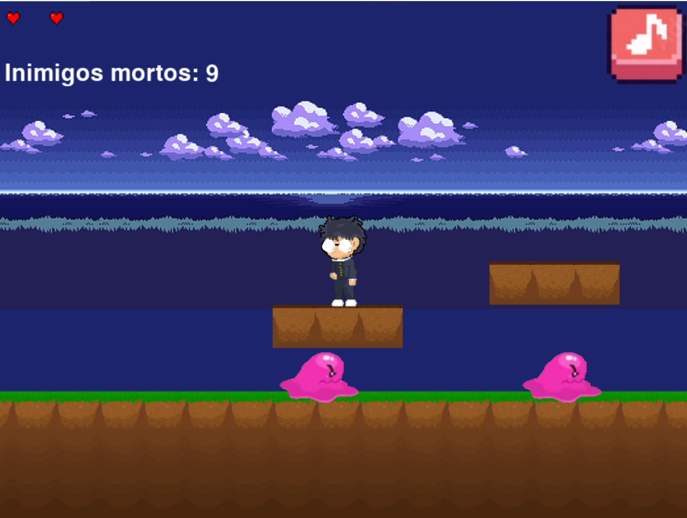
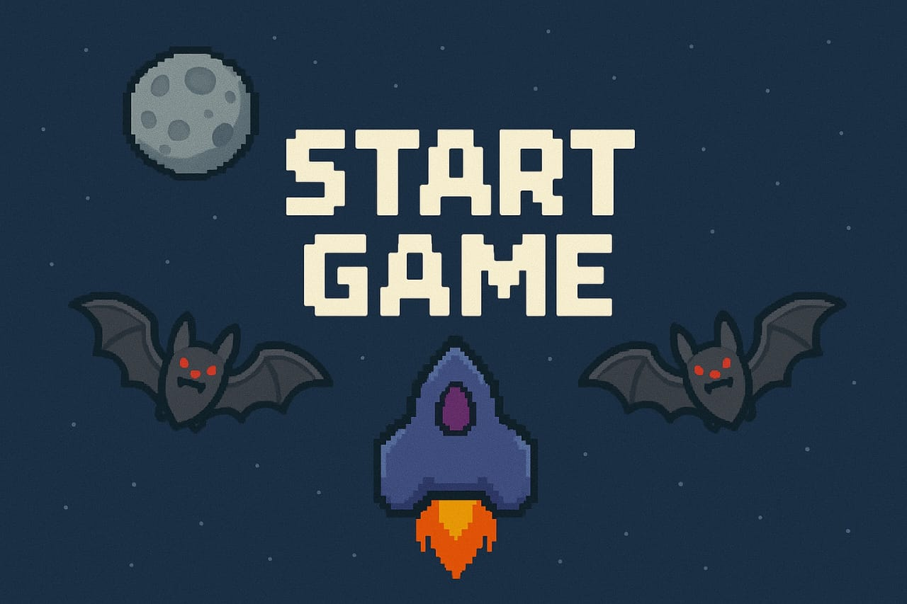

Enemy Run
Jogo Python – Desafio Pessoal
Este jogo foi desenvolvido como um desafio pessoal, totalmente em Python, sem utilizar bibliotecas externas como Pygame, apenas com funcionalidades nativas da linguagem. O objetivo do jogo é derrotar inimigos ao longo do caminho e alcançar o final do nível. O projeto ainda está em desenvolvimento, com melhorias planejadas para adicionar novas mecânicas, inimigos e desafios.
Ver GitHub

Bat Blaster
Jogo de Fliperama – Scratch
Este é um jogo de fliperama desenvolvido no Scratch, onde o jogador controla uma nave e deve eliminar morcegos inimigos para sobreviver e alcançar a maior pontuação possível. O projeto foi criado como experiência de desenvolvimento e aprendizado em programação visual, com foco em lógica de jogo, colisões e interatividade. Ainda está em desenvolvimento, com melhorias planejadas para novos inimigos, power-ups e desafios.
Ver Scratch